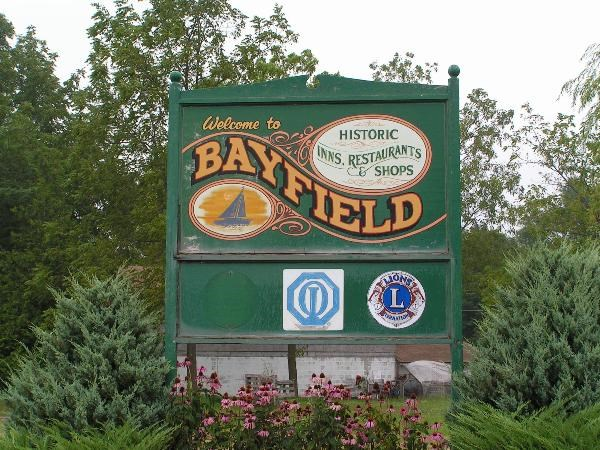

The Aereolas
Dick Davis
Diggler
JR Shitty & the Bean Flowers
Sleepy Punk
Stubbed
Misc.
Odds and Ends...
Thinking of You by JP Wild
Released October 3, 2017
<a href="https://sleepypunkrecordings.bandcamp.com/album/jp-wild">JP Wild by JP Wild</a>
JP Wild...

I Need You Now by Robbie
Released January 31, 2016
<a href="https://sleepypunkrecordings.bandcamp.com/album/robbie-at-the-church-august-2014">Robbie at The Church - August 2014 by Sleepy Punk Recordings</a>
Robbie...